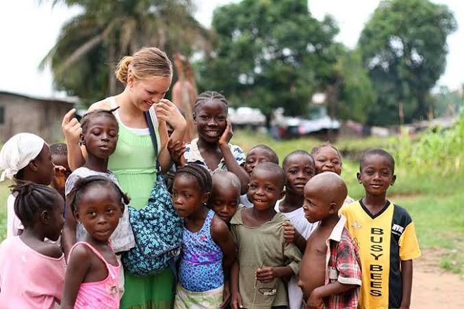
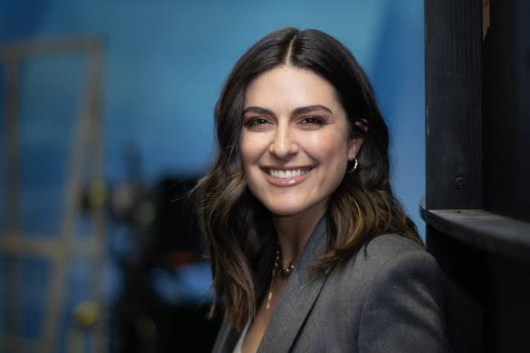

Dr. Elena Rostova
Founder & Learning DirectorFormer university lecturer with 12+ years of experience in educational psychology and curriculum architecture.
At Doodle Learning Center, we believe education should be dynamic, accessible, and human. We combine modern technology with thoughtful design to build learning experiences that adapt to you.
Doodle Learning Center began with a simple observation: traditional learning platforms were often cluttered, overwhelming, and passive. Students spent more time navigating broken interfaces than mastering skills.
Our platform brings clarity back to digital learning by combining intuitive interactive modules, real-time analytics, and open peer collaboration into a unified space.

Passionate educators, UX specialists, and engineers working behind the scenes.
Former university lecturer with 12+ years of experience in educational psychology and curriculum architecture.
Specialist in human-computer interaction and accessible user experiences, dedicated to designing intuitive digital platforms.
Full-stack developer and open-source contributor passionate about building fast, accessible web platforms.

Dedicated to fostering inclusive learning environments and guiding students through peer mentorship networks.